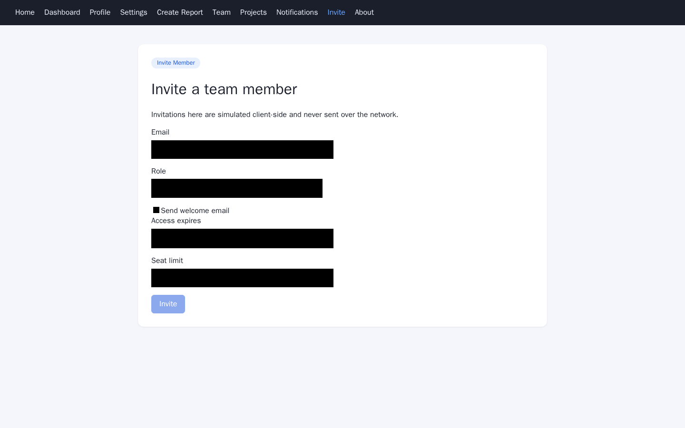

Invite a team member
Use the /flowprobe-screenshot-app/invite page to send a teammate an invitation with a role, seat limit, access expiry date, and welcome message.
Steps
- Open
flowprobe-screenshot-app/invite. - Enter your teammate's email address in Email.

- Select a role in Role.
- Click Invite.
The other fields (Send welcome email, Access expires, Seat limit) are optional.
Fields
| Field | Type | Required |
|---|---|---|
| yes | ||
| Role | select | no |
| Send welcome email | checkbox | no |
| Access expires | date | no |
| Seat limit | number | no |
- Seat limit: minimum value 0.